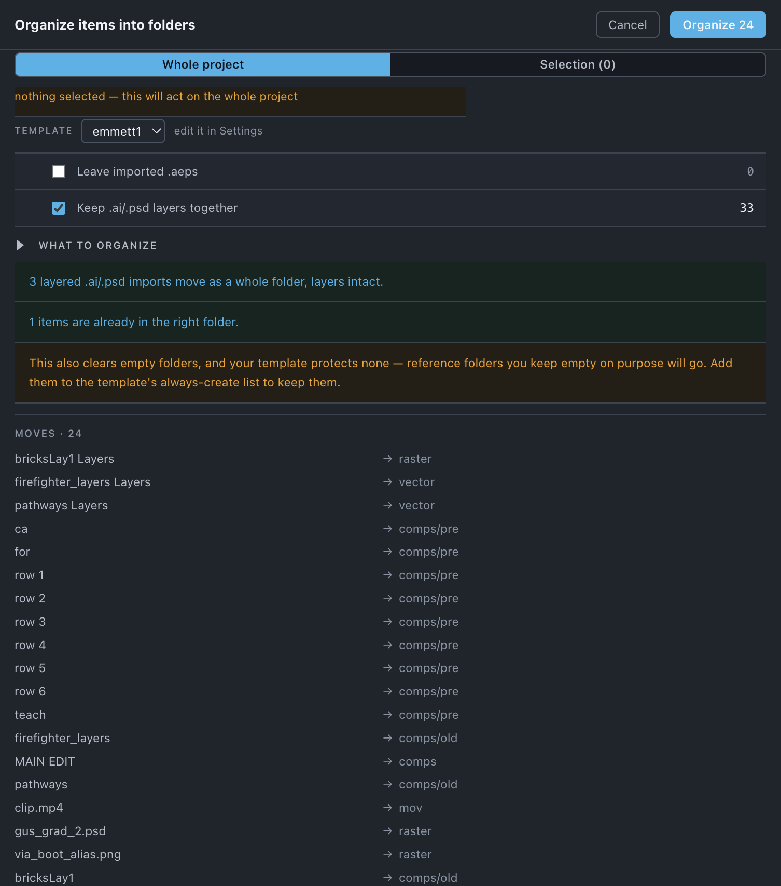

Organize
Files every comp and asset into the folder structure your template defines — and knows a precomp from a master and a layered .psd from a pile of layers.
Use it when
- The Project panel has grown the way projects grow, and you want it back to a structure without dragging things one folder at a time.
- You have just imported another
.aep— a template, a previous version, a colleague's build — and its folders are sitting inside yours. - Someone scattered the layers of a
.psdor.aiacross the project. - You are about to hand the project on and want it to look like your other projects.
What it does
Reads the dependency graph, decides what each item is — a top-level comp, a precomp, a comp nothing uses, video, raster, vector, audio, an image sequence, a solid — and moves each into the folder your template gives that kind. Folders the moves empty are removed. Nothing is deleted, nothing on disk changes, and it is one ⌘Z.
What it does not do: it never deletes an item (Unused and Reduce do that), it does not touch files on disk (Sort disk does), and it does not keep hand-made sub-folders — filing by kind is the design.
Do it
- Choose the template at the top of the sheet, or keep the one in use. Its rows are edited in Settings.
- Read the notes. They are worked out from the plan and tell you what will move, what is already in place, and what will be left alone.
- Read the Moves list — every item and where it goes.
- Press Organize n.
Scope. With comps or footage selected in the Project panel, the sheet offers Selection (n) and picks it; a selected folder means its contents. Otherwise, or if the selection holds nothing it can act on, the whole project.

What you'll see
| Option | What it means |
|---|---|
| Template | Which folder scheme this run applies. Organize and Sort disk share it. |
| Leave imported .aeps | Off by default. On, an imported project's own folder stays standing and its items are not filed by kind. |
| Keep .ai/.psd layers together | On by default. A layered import moves as one asset, by the source file's kind, instead of its layers being split between raster and vector. |
| What to organize | All (default), or Some and a checklist of kinds — comps nothing uses, top-level comps, precomps, vector, raster, video, image sequences, audio, 3D, data, other footage, solids — each with its count. Toolbox remembers your choice per job. |
Notes it may raise, and what they mean:
- n items are already in the right folder. — nothing to do for those.
- n items matched no rule in "template" and were left where they are. — a blank row in the template means "leave alone"; this is that.
- No masters declared, so nothing is treated as unused — top-level comps are filed as comps rather than as old. — see Set up each project. Declare masters and the
comps/otherrow starts working. - n layered .ai/.psd imports move as a whole folder, layers intact.
- n layer sets had been split up and are being gathered back into a folder. Check one before applying — the grouping is worked out from the source file.
- n items from imported .aep projects will be filed by type. If any duplicate what you already have, run Consolidate first… — see below.
- n protected items were left untouched.
- This also clears empty folders, and your template protects none — reference folders you keep empty on purpose will go. Add them to the template's always-create list to keep them.
Undo
One ⌘Z. Nothing on disk changes.
Watch out
Things you might not think to do
- File only the footage and leave your comps where you put them. What to organize › Some, tick the footage kinds. The choice is remembered per job.
- Tidy one imported subtree and nothing else. Select the imported
.aep's folder in the Project panel: a folder selection means its contents. - Re-gather a
.psdsomeone scattered. Toolbox finds a layer set by its shared source file even after its folder is gone. Check one before applying, as the note says. - Control the Project panel's sort order. Number the folders in Settings › Folder naming (
00_comps,01_mov…). Numbers are the only lever on After Effects' sort.
Pairs with
Consolidate before it, when an .aep was imported. Empty folders is built in. The disk side is Sort disk, and independent of this.